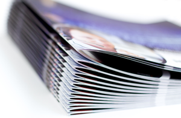
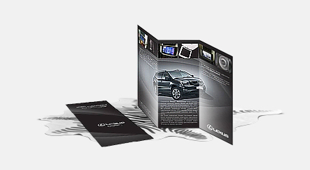

1) Завантажити свій макет посторінково. Головне, щоб макет був створений відповідно до вимог друкарні. Після завершення завантаження макета, він пройде перевірку системою, якщо все в порядку і помилок в макеті не виявлено – Ви зможете завершити оформлення замовлення вибором кількості комплектів та опцій. Усунути помилки можна, ознайомившись з Вимогами до макетів.
2) Замовити дизайн. Для того, аби дизайнер приступив до роботи, необхідно завантажити ваші ілюстрації в потрібному порядку, підписати їх, надавши текст для наповнення, докладно повідомити фахівця у вікні замовлення про побажання. Ескізний варіант дизайнер надасть у стрічці обговорення, Ви зможете внести поправки або підтвердити макет.
Терміни виготовлення, наклади і ціни рекламних брошур і каталогів різних форматів представлені в таблиці нижче, вартість вказана за мінімальний обсяг сторінок і 4 додаткові сторінки одного екземпляру. Дизайн 1 сторінки коштує 60 грн. Скористайтеся калькулятором, щоб порахувати вартість брошур і каталогів більшого обсягу.При замовленні сайт автоматично рахує ціну потрібної кількості сторінок, при замовленні з розробкою дизайну необхідно обов'язково вказати точну кількість сторінок.При замовленні тиражів від 30 шт. термін виготовлення збільшується до 2-3 днів.
| Формат | Наклад | Ціна за 1 екземпляр | +4 стр. | Термін виготовлення |
| Брошури, А6 (12 стор.) | от 5 шт. | 8 грн. | 2 грн. | 1 робочий день |
| Брошури, А5 (12 стор.) | от 5 шт. | 14 грн. | 4 грн. | 1 робочий день |
| Брошури, А4 (12 стор.) | от 5 шт. | 26 грн. | 8 грн. | 1 робочий день |
| Каталоги, А5 (24 стор.) | от 1 шт. | 49 грн. | 8 грн. | 1 робочий день |
| Каталоги, А4 (24 стор.) | от 1 шт. | 79 грн. | 12 грн. | 1 робочий день |
| Каталоги, А3 (24 стор.) | от 1 шт. | 139 грн. | 20 грн. | 1 робочий день |
Друк брошур і каталогів надає можливість представити компанію, розповісти про переваги фірми, зробити презентацію товарів і послуг у зручному для клієнтів і партнерів форматі. Багатосторінкову продукцію використовують у вигляді меню для ресторанів, рекламних каталогів, журналів. Крім цього брошури можуть бути у вигляді інструкції, керівництва користувача, бути методичним матеріалом або довідником – різні види і формати (А4, А5, А6) можна обрати на нашому сайті.
Виготовлення та друк брошур онлайн - відчуйте переваги:
- оперативний цифровий друк малих тиражів за 1 день;
- загальна кількість сторінок - від 12 до 36, внутрішній блок від 8 до 32 сторінок на матовому папері (150 г/м2) скріплюється на скобу;
- щільна обкладинка 250 г/м2.
- формат брошури: А4, А5, А6;
- друк тиражами від 5 примірників;
- ламінація обкладинки каталогу за бажанням;
- можливість замовити дизайн брошур, каталогів і журналів онлайн;
- завантаження макета клієнта і його автоматична перевірка в режимі онлайн;
- адекватні ціни та зручна доставка.
Якщо Вам необхідний варіант більшого обсягу (від 20 сторінок), рекомендуємо звернути увагу на каталоги.
Друк каталогів - технічні характеристики:
- кількість сторінок від 24 до 160;
- скріплення на металеву (білу або чорну) пружину;
- цифровий друк від 1-го примірника;
- формати: А4, А5, А3;
- ламінація обкладинки і сторінок доступні як додаткова опція;
- обкладинка 350г/м2 входить у вартість;
- блок каталогу друкується на папері щільністю 170 г/м2.
Виготовлення брошур на цифровому обладнанні - це висока швидкість і чудова передача кольору. Тому ми гарантуємо презентабельний зовнішній вигляд Вашої реклами, бездоганну якість дизайну та друку.